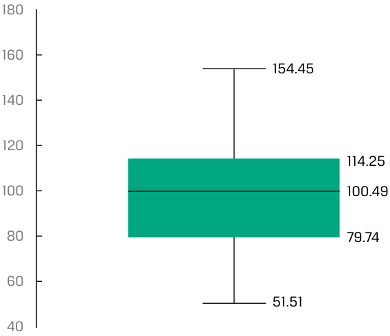
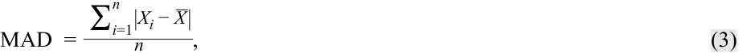
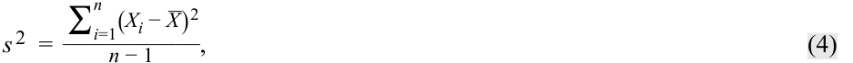
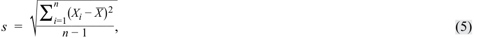
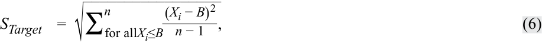
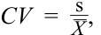
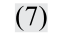
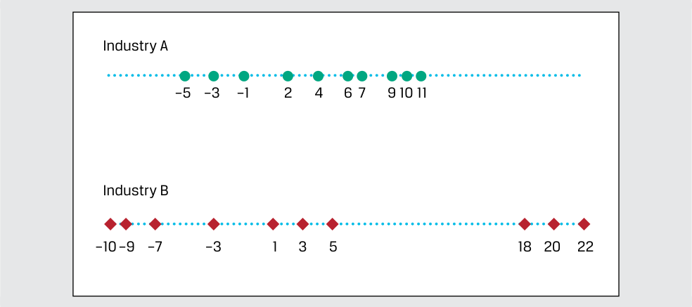
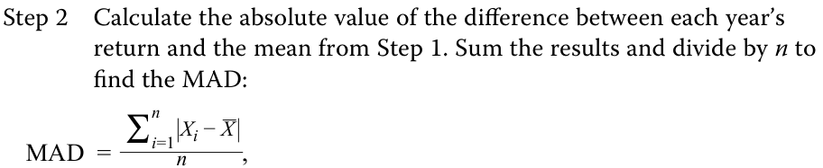
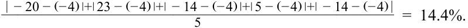

Learning Module 3 Statistical Measures of Asset Returns - Part 2: Measures of Dispersion
Volume 1: Quantitative Methods
Learning Module 3 Statistical Measures of Asset Returns
Part 2/4: Measures of Dispersion (PDF Pages 108–117)
Tập 1: Phương pháp Định lượng (Quantitative Methods)
Học phần 3: Các thước đo Thống kê về Tỷ suất sinh lợi Tài sản (Statistical Measures of Asset Returns)
Phần 2/4: Các thước đo Độ phân tán (Measures of Dispersion) (Trang PDF 108–117)
Exhibit 10: Box and Whisker Plot
Bảng minh họa 10: Biểu đồ Hộp và Râu (Box and Whisker Plot)

Chú thích hình ảnh: - Giá trị cao nhất (râu trên): 154.45 - Cận trên của hộp ($Q_3$): 114.25 - Đường giữa hộp (Trung vị): 100.49 - Cận dưới của hộp ($Q_1$): 79.74 - Giá trị thấp nhất (râu dưới): 51.51
- The median is closest to:
-
A. 34.51.
-
B. 100.49.
-
C. 102.98.
-
Solution:
B is correct. In a box and whisker plot, the “box” represents the lower bound of the second quartile and the upper bound of the third quartile, with the median or arithmetic average noted as a measure of central tendency of the entire distribution. The median is indicated within the box, which is 100.49.
- Trung vị (median) gần nhất với:
-
A. 34.51.
-
B. 100.49.
-
C. 102.98.
-
Lời giải:
- The interquartile range is closest to:
A. 13.76.
B là đáp án đúng. Trong biểu đồ hộp và râu, phần “hộp” đại diện cho cận dưới của tứ phân vị thứ hai và cận trên của tứ phân vị thứ ba, với trung vị hoặc trung bình cộng được đánh dấu như một thước đo xu hướng trung tâm của toàn bộ phân phối. Trung vị được biểu thị bên trong hộp, có giá trị là 100.49.
- B. 25.74.
- Khoảng tứ phân vị (interquartile range) gần nhất với:
-
A. 13.76.
-
B. 25.74.
-
C. 34.51.
-
Lời giải:
C. 34.51. Solution:
C is correct. The interquartile range is the height of the box, which is the difference between 114.25 and 79.74, equal to 34.51.
C là đáp án đúng. Khoảng tứ phân vị là chiều cao của hộp, tức là chênh lệch giữa 114.25 và 79.74, bằng 34.51 ($114.25 - 79.74 = 34.51$).
3
3
MEASURES OF DISPERSION
CÁC THƯỚC ĐO ĐỘ PHÂN TÁN (MEASURES OF DISPERSION)
calculate, interpret, and evaluate measures of dispersion to address an investment problem
tính toán, diễn giải và đánh giá các thước đo độ phân tán để giải quyết một bài toán đầu tư
Few would disagree with the importance of expected return or mean return in investments: To understand an investment more completely, however, we also need to know how returns are dispersed around the mean. Dispersion is the variability around the central tendency. If mean return addresses reward, then dispersion addresses risk and uncertainty.
Ít ai có thể phủ nhận tầm quan trọng của tỷ suất sinh lợi kỳ vọng hay tỷ suất sinh lợi trung bình trong đầu tư: Tuy nhiên, để hiểu đầy đủ hơn về một khoản đầu tư, chúng ta cũng cần biết tỷ suất sinh lợi phân tán như thế nào xung quanh giá trị trung bình. Độ phân tán (Dispersion) là mức độ biến thiên xung quanh xu hướng trung tâm. Nếu tỷ suất sinh lợi trung bình đề cập đến phần thưởng (reward), thì độ phân tán đề cập đến rủi ro và sự không chắc chắn (risk and uncertainty).
In this lesson, we examine the most common measures of dispersion: range, mean absolute deviation, variance, and standard deviation. These are all measures of absolute dispersion . Absolute dispersion is the amount of variability present without comparison to any reference point or benchmark.
Trong bài học này, chúng ta xem xét các thước đo độ phân tán phổ biến nhất: khoảng biến thiên (range), độ lệch tuyệt đối trung bình (mean absolute deviation), phương sai (variance), và độ lệch chuẩn (standard deviation). Đây đều là các thước đo độ phân tán tuyệt đối (absolute dispersion). Độ phân tán tuyệt đối là mức độ biến thiên hiện có mà không so sánh với bất kỳ điểm tham chiếu hay chuẩn so sánh (benchmark) nào.
The Range
Khoảng biến thiên (The Range)
We encountered range earlier when we discussed the construction of frequency distributions. It is the simplest of all the measures of dispersion.
Chúng ta đã bắt gặp khoảng biến thiên trước đó khi thảo luận về việc xây dựng các phân phối tần số. Đây là thước đo đơn giản nhất trong tất cả các thước đo độ phân tán.
Definition of Range. The range is the difference between the maximum and minimum values in a dataset:
Định nghĩa Khoảng biến thiên (Definition of Range). Khoảng biến thiên (range) là chênh lệch giữa giá trị lớn nhất và giá trị nhỏ nhất trong một tập dữ liệu:
Range = Maximum value − Minimum value. ~~(2)~~
An alternative way to report the range is to specify both the maximum and minimum values. This alternative definition provides more information as the range is reported as “from Maximum Value to Minimum Value.”
Một cách khác để báo cáo khoảng biến thiên là chỉ rõ cả giá trị lớn nhất và giá trị nhỏ nhất. Định nghĩa thay thế này cung cấp nhiều thông tin hơn khi khoảng biến thiên được báo cáo là “từ Giá trị Lớn nhất đến Giá trị Nhỏ nhất”.
One advantage of the range is ease of computation. A disadvantage is that the range uses only two pieces of information from the distribution. It cannot tell us how the data are distributed (i.e., the shape of the distribution). Because the range is the difference between the maximum and minimum values in the dataset, it is also sensitive to extremely large or small observations (“outliers”) that may not be representative of the distribution.
Một ưu điểm của khoảng biến thiên là dễ tính toán. Nhược điểm là khoảng biến thiên chỉ sử dụng hai mẩu thông tin từ phân phối. Nó không thể cho chúng ta biết dữ liệu được phân phối như thế nào (tức là hình dạng của phân phối). Bởi vì khoảng biến thiên là chênh lệch giữa giá trị lớn nhất và giá trị nhỏ nhất trong tập dữ liệu, nên nó cũng nhạy cảm với các quan sát cực lớn hoặc cực nhỏ (“các giá trị ngoại lai” – “outliers”) vốn có thể không đại diện cho phân phối đó.
Mean Absolute Deviations
Độ lệch Tuyệt đối Trung bình (Mean Absolute Deviations)
Measures of dispersion can be computed using all the observations in the distribution rather than just the highest and lowest. We could compute measures of dispersion as the arithmetic average of the deviations around the mean, but the problem is that deviations around the mean always sum to 0. Therefore, we need to find a way to address the problem of negative deviations canceling out positive deviations.
Các thước đo độ phân tán có thể được tính bằng cách sử dụng tất cả các quan sát trong phân phối thay vì chỉ giá trị cao nhất và thấp nhất. Chúng ta có thể tính các thước đo độ phân tán bằng trung bình cộng của các độ lệch xung quanh giá trị trung bình, nhưng vấn đề là tổng các độ lệch xung quanh giá trị trung bình luôn bằng 0. Do đó, chúng ta cần tìm một cách để giải quyết vấn đề các độ lệch âm triệt tiêu các độ lệch dương.
One solution is to examine the absolute deviations around the mean as in the mean absolute deviation (MAD).
Một giải pháp là xem xét các độ lệch tuyệt đối xung quanh giá trị trung bình như trong độ lệch tuyệt đối trung bình (mean absolute deviation – MAD).
MAD Formula. The MAD for a sample is:
Công thức MAD (MAD Formula). MAD của một mẫu là:

where X is the sample mean, _n is the number of observations in the sample, and the | | indicate the absolute value of what is contained within these bars.
trong đó $\bar{X}$ là trung bình mẫu, $n$ là số lượng quan sát trong mẫu, và ký hiệu $| \ |$ biểu thị giá trị tuyệt đối của biểu thức nằm bên trong hai vạch thẳng này.
The MAD uses all of the observations in the sample and is thus superior to the range as a measure of dispersion. One technical drawback of MAD is that it is difficult to manipulate mathematically compared with the next measure we will introduce, sample variance.
MAD sử dụng tất cả các quan sát trong mẫu và do đó ưu việt hơn khoảng biến thiên khi làm thước đo độ phân tán. Một nhược điểm kỹ thuật của MAD là nó khó thao tác về mặt toán học so với thước đo tiếp theo mà chúng ta sẽ giới thiệu, đó là phương sai mẫu (sample variance).
Sample Variance and Sample Standard Deviation
Phương sai Mẫu và Độ lệch chuẩn Mẫu (Sample Variance and Sample Standard Deviation)
A second approach to the problem of positive and negative deviations canceling out is to square them. Variance and standard deviation, which are based on squared deviations, are the two most widely used measures of dispersion. Variance is defined as the average of the squared deviations around the mean. Standard deviation is the square root of the variance.
Cách tiếp cận thứ hai cho vấn đề các độ lệch dương và âm triệt tiêu lẫn nhau là bình phương chúng lên. Phương sai và độ lệch chuẩn, vốn dựa trên các độ lệch bình phương, là hai thước đo độ phân tán được sử dụng rộng rãi nhất. Phương sai (Variance) được định nghĩa là trung bình của các bình phương độ lệch xung quanh giá trị trung bình. Độ lệch chuẩn (Standard deviation) là căn bậc hai dương của phương sai.
Sample Variance
_Phương sai Mẫu (Sample Variance)_
In investments, we often do not know the mean of a population of interest, so we estimate it using the mean from a sample drawn from the population. The corresponding measure of dispersion is the sample variance or standard deviation.
Trong đầu tư, chúng ta thường không biết giá trị trung bình của một tổng thể (population) đang quan tâm, vì vậy chúng ta ước lượng nó bằng cách sử dụng giá trị trung bình từ một mẫu được rút ra từ tổng thể đó. Thước đo độ phân tán tương ứng là phương sai mẫu hoặc độ lệch chuẩn mẫu.
Sample Variance Formula . The sample variance , s2 , is:
Công thức Phương sai Mẫu (Sample Variance Formula). Phương sai mẫu (sample variance), $s^2$, là:

where X is the sample mean and _n is the number of observations in the sample.
trong đó $\bar{X}$ là trung bình mẫu và $n$ là số lượng quan sát trong mẫu.
The variance calculation takes care of the problem of negative deviations from the mean canceling out positive deviations by squaring those deviations.
Cách tính phương sai giải quyết được vấn đề các độ lệch âm so với giá trị trung bình triệt tiêu các độ lệch dương bằng cách bình phương các độ lệch đó.
For the sample variance, by dividing by the sample size minus 1 (or n − 1) rather than n , we improve the statistical properties of the sample variance. The quantity n − 1 is also known as the number of degrees of freedom in estimating the population variance. To estimate the population variance with s2 , we must first calculate the sample mean, which itself is an estimated parameter. Therefore, once we have computed the sample mean, there are only n − 1 independent pieces of information from the sample; that is, if you know the sample mean and n − 1 of the observations, you could calculate the missing sample observation.
Đối với phương sai mẫu, bằng cách chia cho kích thước mẫu trừ đi 1 (tức $n - 1$) thay vì $n$, chúng ta cải thiện được các đặc tính thống kê của phương sai mẫu. Đại lượng $n - 1$ còn được gọi là số bậc tự do (degrees of freedom) trong việc ước lượng phương sai tổng thể. Để ước lượng phương sai tổng thể bằng $s^2$, trước tiên chúng ta phải tính trung bình mẫu, vốn bản thân nó đã là một tham số ước lượng. Do đó, một khi chúng ta đã tính được trung bình mẫu, chỉ còn lại $n - 1$ mẩu thông tin độc lập từ mẫu; nghĩa là, nếu bạn biết trung bình mẫu và $n - 1$ quan sát, bạn có thể tính được quan sát mẫu còn thiếu.
Sample Standard Deviation
_Độ lệch chuẩn Mẫu (Sample Standard Deviation)_
Variance is measured in squared units associated with the mean, and we need a way to return to those original units. Standard deviation, the square root of the variance, solves this problem and is more easily interpreted than the variance.
Phương sai được đo bằng đơn vị bình phương gắn với giá trị trung bình, và chúng ta cần một cách để quay trở lại các đơn vị ban đầu đó. Độ lệch chuẩn, căn bậc hai của phương sai, giải quyết được vấn đề này và dễ diễn giải hơn so với phương sai.
A useful property of the sample standard deviation is that, unlike sample variance, it is expressed in the same unit as the data itself. If the dataset is percentage of daily returns for an index, then both the average and the standard deviation of the dataset is in percentage terms, while the variance is in squared percentage of daily returns.
Một đặc tính hữu ích của độ lệch chuẩn mẫu là, không giống như phương sai mẫu, nó được biểu thị bằng cùng đơn vị với chính dữ liệu đó. Nếu tập dữ liệu là tỷ lệ phần trăm tỷ suất sinh lợi hàng ngày của một chỉ số, thì cả giá trị trung bình và độ lệch chuẩn của tập dữ liệu đều tính theo phần trăm, trong khi phương sai tính theo phần trăm bình phương của tỷ suất sinh lợi hàng ngày.
Sample Standard Deviation Formula. The sample standard deviation , s , is:
Công thức Độ lệch chuẩn Mẫu (Sample Standard Deviation Formula). Độ lệch chuẩn mẫu (sample standard deviation), $s$, là:

where X is the sample mean and _n is the number of observations in the sample.
trong đó $\bar{X}$ là trung bình mẫu và $n$ là số lượng quan sát trong mẫu.
Because the standard deviation is a measure of dispersion about the arithmetic mean, we usually present the arithmetic mean and standard deviation together when summarizing data. When we are dealing with data that represent a time series of percentage changes, presenting the geometric mean (i.e., representing the compound rate of growth) is also very helpful.
Bởi vì độ lệch chuẩn là thước đo độ phân tán xung quanh trung bình cộng, chúng ta thường trình bày trung bình cộng và độ lệch chuẩn cùng nhau khi tóm tắt dữ liệu. Khi chúng ta xử lý dữ liệu đại diện cho một chuỗi thời gian của các thay đổi phần trăm, việc trình bày thêm trung bình nhân (geometric mean – tức đại diện cho tốc độ tăng trưởng kép) cũng rất hữu ích.
Downside Deviation and Coefficient of Variation
Độ lệch Dưới và Hệ số Biến thiên (Downside Deviation and Coefficient of Variation)
An asset’s variance or standard deviation of returns is often interpreted as a measure of the asset’s risk. Variance and standard deviation of returns take account of returns above and below the mean, or upside and downside risks, respectively. However,
Phương sai hoặc độ lệch chuẩn của tỷ suất sinh lợi của một tài sản thường được diễn giải là thước đo rủi ro của tài sản đó. Phương sai và độ lệch chuẩn của tỷ suất sinh lợi tính đến cả các mức tỷ suất sinh lợi nằm trên và nằm dưới giá trị trung bình, tương ứng là rủi ro phía trên (upside risk) và rủi ro phía dưới (downside risk). Tuy nhiên,
investors are typically concerned only with downside risk —for example, returns below the mean or below some specified minimum target return. As a result, analysts have developed measures of downside risk.
các nhà đầu tư thường chỉ quan tâm đến rủi ro phía dưới (downside risk)—ví dụ, các mức tỷ suất sinh lợi thấp hơn giá trị trung bình hoặc thấp hơn một mức tỷ suất sinh lợi mục tiêu tối thiểu xác định nào đó. Do đó, các chuyên viên phân tích đã phát triển các thước đo rủi ro phía dưới.
Downside Deviation
_Độ lệch Dưới (Downside Deviation)_
In practice, we may be concerned with values of return (or another variable) below some level other than the mean. For example, if our return objective is 6.0 percent annually (our minimum acceptable return), then we may be concerned particularly with returns below 6.0 percent a year. The target downside deviation, also referred to as the target semideviation , is a measure of dispersion of the observations (here, returns) below a target—for example 6.0 percent. To calculate a sample target semideviation, we first specify the target. After identifying observations below the target, we find the sum of those squared negative deviations from the target, divide that sum by the total number of observations in the sample minus 1, and, finally, take the square root.
Trong thực tế, chúng ta có thể quan tâm đến các giá trị tỷ suất sinh lợi (hoặc một biến số khác) thấp hơn một mức nào đó không phải là giá trị trung bình. Ví dụ, nếu mục tiêu tỷ suất sinh lợi của chúng ta là 6.0 phần trăm mỗi năm (mức tỷ suất sinh lợi tối thiểu có thể chấp nhận được của chúng ta), thì chúng ta có thể đặc biệt quan tâm đến các mức tỷ suất sinh lợi dưới 6.0 phần trăm một năm. Độ lệch dưới mục tiêu (target downside deviation), còn được gọi là bán độ lệch mục tiêu (target semideviation), là thước đo độ phân tán của các quan sát (ở đây là tỷ suất sinh lợi) nằm dưới một mức mục tiêu—ví dụ 6.0 phần trăm. Để tính bán độ lệch mục tiêu mẫu, trước tiên chúng ta xác định mức mục tiêu. Sau khi xác định các quan sát nằm dưới mức mục tiêu, chúng ta tìm tổng các bình phương độ lệch âm đó so với mục tiêu, chia tổng đó cho tổng số quan sát trong mẫu trừ đi 1 ($n - 1$), và cuối cùng lấy căn bậc hai.
Sample Target Semideviation Formula. The target semideviation, s Target, is:
Công thức Bán độ lệch Mục tiêu Mẫu (Sample Target Semideviation Formula). Bán độ lệch mục tiêu, $s_{\text{Target}}$, là:

where B is the target and n is the total number of sample observations. We illustrate this in Example 3.
trong đó $B$ là mức mục tiêu (target) và $n$ là tổng số quan sát trong mẫu. Chúng ta minh họa điều này trong Ví dụ 3.
EXAMPLE 3
VÍ DỤ 3
Calculating Target Downside Deviation
Tính Độ lệch Dưới Mục tiêu (Calculating Target Downside Deviation)
Consider the monthly returns on a portfolio as shown in Exhibit 11:
Hãy xem xét tỷ suất sinh lợi hàng tháng của một danh mục đầu tư như được thể hiện trong Bảng minh họa 11:
Bảng minh họa 11: Tỷ suất sinh lợi Hàng tháng của Danh mục đầu tư (Monthly Portfolio Returns)
Exhibit 11: Monthly Portfolio Returns
| Tháng (Month) | Tỷ suất sinh lợi (Return) (%) |
|---|---|
| Tháng Một | 5 |
| Tháng Hai | 3 |
| Tháng Ba | −1 |
| Tháng Tư | −4 |
| Tháng Năm | 4 |
| Tháng Sáu | 2 |
| Tháng Bảy | 0 |
| Tháng Tám | 4 |
| Tháng Chín | 3 |
| Tháng Mười | 0 |
| Tháng Mười Một | 6 |
| Tháng Mười Hai | 5 |
| Month | Return (%) |
|---|---|
| January | 5 |
| February | 3 |
| March | −1 |
| April | −4 |
| May | 4 |
| June | 2 |
| July | 0 |
| August | 4 |
| September | 3 |
| October | 0 |
| November | 6 |
| December | 5 |
- Tính độ lệch dưới mục tiêu khi tỷ suất sinh lợi mục tiêu là 3 phần trăm.
- Calculate the target downside deviation when the target return is 3 percent. Solution:
Lời giải:
| Month | Observation | Deviation from the 3% Target |
Deviations below the Target |
Squared Devia- tions below the Target |
|---|---|---|---|---|
| January | 5 | 2 | — | — |
| February | 3 | 0 | — | — |
| March | −1 | −4 | −4 | 16 |
| April | −4 | −7 | −7 | 49 |
| May | 4 | 1 | — | — |
| June | 2 | −1 | −1 | 1 |
| July | 0 | −3 | −3 | 9 |
| August | 4 | 1 | — | — |
| September | 3 | 0 | — | — |
| October | 0 | −3 | −3 | 9 |
| November | 6 | 3 | — | — |
| December | 5 | 2 | — | — |
| Sum | 84 |
| Tháng (Month) | Quan sát (Observation) | Độ lệch so với mục tiêu 3% (Deviation from the 3% Target) | Độ lệch dưới mục tiêu (Deviations below the Target) | Bình phương độ lệch dưới mục tiêu (Squared Deviations below the Target) |
|---|---|---|---|---|
| Tháng Một | 5 | 2 | — | — |
| Tháng Hai | 3 | 0 | — | — |
| Tháng Ba | −1 | −4 | −4 | 16 |
| Tháng Tư | −4 | −7 | −7 | 49 |
| Tháng Năm | 4 | 1 | — | — |
| Tháng Sáu | 2 | −1 | −1 | 1 |
| Tháng Bảy | 0 | −3 | −3 | 9 |
| Tháng Tám | 4 | 1 | — | — |
| Tháng Chín | 3 | 0 | — | — |
| Tháng Mười | 0 | −3 | −3 | 9 |
| Tháng Mười Một | 6 | 3 | — | — |
| Tháng Mười Hai | 5 | 2 | — | — |
| Tổng (Sum) | 84 |
84 Target semideviation = √( 12 − 1) = 2.7634%.
- If the target return were 4 percent, would your answer be different from that for question 1? Without using calculations, explain how would it be different?
- Nếu tỷ suất sinh lợi mục tiêu là 4 phần trăm, câu trả lời của bạn có khác với câu trả lời cho câu hỏi 1 không? Không sử dụng phép tính, hãy giải thích nó sẽ khác như thế nào?
Solution:
Lời giải:
If the target return is higher, then the existing deviations would be larger and there would be several more values in the deviations and squared deviations below the target; so, the target semideviation would be larger.
Nếu tỷ suất sinh lợi mục tiêu cao hơn, thì các độ lệch hiện có sẽ lớn hơn và sẽ có thêm một số giá trị nằm trong cột độ lệch và bình phương độ lệch dưới mục tiêu; do đó, bán độ lệch mục tiêu sẽ lớn hơn.
How does the target downside deviation relate to the sample standard deviation? We illustrate the differences between the target downside deviation and the standard deviation in Example 4, using the data in Example 3.
Độ lệch dưới mục tiêu liên hệ như thế nào với độ lệch chuẩn mẫu? Chúng ta minh họa sự khác biệt giữa độ lệch dưới mục tiêu và độ lệch chuẩn trong Ví dụ 4, sử dụng dữ liệu trong Ví dụ 3.
EXAMPLE 4
VÍ DỤ 4
Comparing the Target Downside Deviation with the Standard Deviation
So sánh Độ lệch Dưới Mục tiêu với Độ lệch chuẩn (Comparing the Target Downside Deviation with the Standard Deviation)
- Given the data in Example 3, calculate the sample standard deviation.
- Cho dữ liệu trong Ví dụ 3, hãy tính độ lệch chuẩn mẫu.
Solution:
Lời giải:
| Month | Observation D |
eviation from the Mean |
Squared Deviation |
|---|---|---|---|
| January | 5 | 2.75 | 7.5625 |
| February | 3 | 0.75 | 0.5625 |
| March | −1 | −3.25 | 10.5625 |
| April | −4 | −6.25 | 39.0625 |
| May | 4 | 1.75 | 3.0625 |
| June | 2 | −0.25 | 0.0625 |
| Tháng (Month) | Quan sát (Observation) | Độ lệch so với giá trị trung bình (Deviation from the Mean) | Bình phương độ lệch (Squared Deviation) |
|---|---|---|---|
| Tháng Một | 5 | 2.75 | 7.5625 |
| Tháng Hai | 3 | 0.75 | 0.5625 |
| Tháng Ba | −1 | −3.25 | 10.5625 |
| Tháng Tư | −4 | −6.25 | 39.0625 |
| Tháng Năm | 4 | 1.75 | 3.0625 |
| Tháng Sáu | 2 | −0.25 | 0.0625 |
| Month | Observation D |
eviation from the Mean |
Squared Deviation |
|---|---|---|---|
| July | 0 | −2.25 | 5.0625 |
| August | 4 | 1.75 | 3.0625 |
| September | 3 | 0.75 | 0.5625 |
| October | 0 | −2.25 | 5.0625 |
| November | 6 | 3.75 | 14.0625 |
| December | 5 | 2.75 | 7.5625 |
| Sum | 27 | 96.2500 |
| Tháng (Month) | Quan sát (Observation) | Độ lệch so với giá trị trung bình (Deviation from the Mean) | Bình phương độ lệch (Squared Deviation) |
|---|---|---|---|
| Tháng Bảy | 0 | −2.25 | 5.0625 |
| Tháng Tám | 4 | 1.75 | 3.0625 |
| Tháng Chín | 3 | 0.75 | 0.5625 |
| Tháng Mười | 0 | −2.25 | 5.0625 |
| Tháng Mười Một | 6 | 3.75 | 14.0625 |
| Tháng Mười Hai | 5 | 2.75 | 7.5625 |
| Tổng (Sum) | 27 | 96.2500 |
96.2500 The sample standard deviation is √ 11= 2.958%.
Độ lệch chuẩn mẫu là $\sqrt{\frac{96.2500}{11}} = 2.958\%$.
- Given the data in Example 3, calculate the target downside deviation if the target is 2 percent. Solution:
- Cho dữ liệu trong Ví dụ 3, hãy tính độ lệch dưới mục tiêu nếu mức mục tiêu là 2 phần trăm.
| Month | Observation | Deviation from the 2% Target |
Deviations below the Target |
Squared Devia- tions below the Target |
|---|---|---|---|---|
| January | 5 | 3 | — | — |
| February | 3 | 1 | — | — |
| March | −1 | −3 | −3 | 9 |
| April | −4 | −6 | −6 | 36 |
| May | 4 | 2 | — | — |
| June | 2 | 0 | — | — |
| July | 0 | −2 | −2 | 4 |
| August | 4 | 2 | — | — |
| September | 3 | 1 | — | — |
| October | 0 | −2 | −2 | 4 |
| November | 6 | 4 | — | — |
| December | 5 | 3 | — | — |
| Sum | 53 |
Lời giải:
__53 The target semideviation with 2 percent target = √ 11= 2.195 percent.
| Tháng (Month) | Quan sát (Observation) | Độ lệch so với mục tiêu 2% (Deviation from the 2% Target) | Độ lệch dưới mục tiêu (Deviations below the Target) | Bình phương độ lệch dưới mục tiêu (Squared Deviations below the Target) |
|---|---|---|---|---|
| Tháng Một | 5 | 3 | — | — |
| Tháng Hai | 3 | 1 | — | — |
| Tháng Ba | −1 | −3 | −3 | 9 |
| Tháng Tư | −4 | −6 | −6 | 36 |
| Tháng Năm | 4 | 2 | — | — |
| Tháng Sáu | 2 | 0 | — | — |
| Tháng Bảy | 0 | −2 | −2 | 4 |
| Tháng Tám | 4 | 2 | — | — |
| Tháng Chín | 3 | 1 | — | — |
| Tháng Mười | 0 | −2 | −2 | 4 |
| Tháng Mười Một | 6 | 4 | — | — |
| Tháng Mười Hai | 5 | 3 | — | — |
| Tổng (Sum) | 53 |
Bán độ lệch mục tiêu với mức mục tiêu 2 phần trăm $= \sqrt{\frac{53}{11}} = 2.195\%$.
- Compare the standard deviation, the target downside deviation if the target is 2 percent, and the target downside deviation if the target is 3 percent.
- So sánh độ lệch chuẩn, độ lệch dưới mục tiêu nếu mức mục tiêu là 2 phần trăm, và độ lệch dưới mục tiêu nếu mức mục tiêu là 3 phần trăm.
Solution:
Lời giải:
The standard deviation is based on the deviation from the mean, or 27% / 12 = 2.25%. The standard deviation includes all deviations from the mean, not just those below it. This results in a sample standard deviation of 2.958 percent.
Độ lệch chuẩn dựa trên độ lệch so với giá trị trung bình, tức là $27\% / 12 = 2.25\%$. Độ lệch chuẩn bao gồm tất cả các độ lệch so với giá trị trung bình, chứ không chỉ những độ lệch nằm dưới nó. Điều này dẫn đến độ lệch chuẩn mẫu là 2.958 phần trăm.
Considering just the four observations below the 2 percent target, the target semideviation is 2.195 percent. It is less than the sample standard deviation since target semideviation captures only the downside risk (i.e., deviations below the target). Considering target semideviation with a 3 percent target,
Khi chỉ xét bốn quan sát nằm dưới mức mục tiêu 2 phần trăm, bán độ lệch mục tiêu là 2.195 phần trăm. Giá trị này nhỏ hơn độ lệch chuẩn mẫu vì bán độ lệch mục tiêu chỉ nắm bắt rủi ro phía dưới (tức là các độ lệch dưới mục tiêu). Khi xét bán độ lệch mục tiêu với mức mục tiêu 3 phần trăm,
there are now five observations below 3 percent, so the target semideviation is higher, at 2.763 percent.
hiện có năm quan sát nằm dưới mức 3 phần trăm, vì vậy bán độ lệch mục tiêu cao hơn, ở mức 2.763 phần trăm.
Coefficient of Variation
_Hệ số Biến thiên (Coefficient of Variation)_
We noted earlier that the standard deviation is more easily interpreted than variance because standard deviation uses the same units of measurement as the observations. We may sometimes find it difficult to interpret what standard deviation means in terms of the relative degree of variability of different sets of data, however, either because the datasets have markedly different means or because the datasets have different units of measurement. In this section, we explain a measure of relative dispersion, the coefficient of variation that can be useful in such situations. Relative dispersion is the amount of dispersion relative to a reference value or benchmark.
Trước đó chúng ta đã lưu ý rằng độ lệch chuẩn dễ diễn giải hơn phương sai vì độ lệch chuẩn sử dụng cùng đơn vị đo lường với các quan sát. Tuy nhiên, đôi khi chúng ta có thể thấy khó diễn giải ý nghĩa của độ lệch chuẩn xét về mức độ biến thiên tương đối của các tập dữ liệu khác nhau, hoặc bởi vì các tập dữ liệu có giá trị trung bình khác biệt rõ rệt hoặc bởi vì các tập dữ liệu có đơn vị đo lường khác nhau. Trong phần này, chúng ta giải thích một thước đo độ phân tán tương đối, đó là hệ số biến thiên, vốn có thể hữu ích trong những tình huống như vậy. Độ phân tán tương đối (Relative dispersion) là mức độ phân tán so với một giá trị tham chiếu hoặc chuẩn so sánh (benchmark).
The coefficient of variation is helpful in such situations as that just described (i.e., datasets with markedly different means or different units of measurement).
Hệ số biến thiên rất hữu ích trong các tình huống như vừa mô tả (tức là các tập dữ liệu có giá trị trung bình khác biệt rõ rệt hoặc đơn vị đo lường khác nhau).
Coefficient of Variation Formula. The coefficient of variation (CV) is the ratio of the standard deviation of a set of observations to their mean value:
Công thức Hệ số Biến thiên (Coefficient of Variation Formula). Hệ số biến thiên (coefficient of variation – CV) là tỷ số giữa độ lệch chuẩn của một tập hợp các quan sát với giá trị trung bình của chúng:


where s is the sample standard deviation and X_ is the sample mean.
trong đó $s$ là độ lệch chuẩn mẫu và $\bar{X}$ là trung bình mẫu.
When the observations are returns, for example, the CV measures the amount of risk (standard deviation) per unit of reward (mean return). An issue that may arise, especially when dealing with returns, is that if X_ is negative, the statistic is meaningless.
Ví dụ, khi các quan sát là tỷ suất sinh lợi, CV đo lường lượng rủi ro (độ lệch chuẩn) trên mỗi đơn vị phần thưởng (tỷ suất sinh lợi trung bình). Một vấn đề có thể phát sinh, đặc biệt khi xử lý tỷ suất sinh lợi, là nếu $\bar{X}$ âm thì con số thống kê này trở nên vô nghĩa.
The CV may be stated as a multiple (e.g., two times) or as a percentage (e.g., 200 percent). Expressing the magnitude of variation among observations relative to their average size, the CV permits direct comparisons of dispersion across different datasets. Reflecting the correction for scale, the CV is a scale-free measure (i.e., , it has no units of measurement).
CV có thể được biểu thị dưới dạng bội số (ví dụ: hai lần) hoặc dưới dạng phần trăm (ví dụ: 200 phần trăm). Bằng cách biểu thị độ lớn của sự biến thiên giữa các quan sát tương ứng với quy mô trung bình của chúng, CV cho phép so sánh trực tiếp độ phân tán giữa các tập dữ liệu khác nhau. Phản ánh việc điều chỉnh theo quy mô, CV là một thước đo không phụ thuộc vào quy mô (scale-free measure, tức là nó không có đơn vị đo lường).
We illustrate the usefulness of CV for comparing datasets with markedly different standard deviations using two hypothetical samples of companies in Example 5.
Chúng ta minh họa tính hữu ích của CV trong việc so sánh các tập dữ liệu có độ lệch chuẩn khác biệt rõ rệt bằng cách sử dụng hai mẫu công ty giả định trong Ví dụ 5.
EXAMPLE 5
VÍ DỤ 5
Coefficient of Variation of Returns on Assets
Hệ số Biến thiên của Tỷ suất sinh lợi trên Tài sản (Coefficient of Variation of Returns on Assets)
Suppose an analyst collects the return on assets (ROA), in percentage terms, for 10 companies for each of two industries:
Giả sử một chuyên viên phân tích thu thập tỷ suất sinh lợi trên tài sản (ROA), tính theo phần trăm, của 10 công ty cho mỗi ngành trong hai ngành:
Exhibit 12: Returns on Assets for Two Industries
Bảng minh họa 12: Tỷ suất sinh lợi trên Tài sản của Hai Ngành (Returns on Assets for Two Industries)
| Company | Industry A | Industry B |
|---|---|---|
| 1 | −5 | −10 |
| 2 | −3 | −9 |
| 3 | −1 | −7 |
| 4 | 2 | −3 |
| 5 | 4 | 1 |
| 6 | 6 | 3 |
| 7 | 7 | 5 |
| 8 | 9 | 18 |
| Công ty (Company) | Ngành A (Industry A) | Ngành B (Industry B) |
|---|---|---|
| 1 | −5 | −10 |
| 2 | −3 | −9 |
| 3 | −1 | −7 |
| 4 | 2 | −3 |
| 5 | 4 | 1 |
| 6 | 6 | 3 |
| 7 | 7 | 5 |
| 8 | 9 | 18 |
| Company | Industry A | Industry B |
|---|---|---|
| 9 | 10 | 20 |
| 10 | 11 | 22 |
| Công ty (Company) | Ngành A (Industry A) | Ngành B (Industry B) |
|---|---|---|
| 9 | 10 | 20 |
| 10 | 11 | 22 |
These data can be represented graphically as shown in Exhibit 13:
Dữ liệu này có thể được biểu diễn bằng đồ thị như trong Bảng minh họa 13:
Exhibit 13: Returns on Assets Depicted Graphically
Bảng minh họa 13: Tỷ suất sinh lợi trên Tài sản được Biểu diễn bằng Đồ thị (Returns on Assets Depicted Graphically)

Chú thích hình ảnh: - Industry A (Ngành A): Các quan sát phân bố từ –5 đến 11 (–5, –3, –1, 2, 4, 6, 7, 9, 10, 11). - Industry B (Ngành B): Các quan sát phân bố rộng hơn từ –10 đến 22 (–10, –9, –7, –3, 1, 3, 5, 18, 20, 22).
- Calculate the average ROA for each industry.
- Tính ROA trung bình cho mỗi ngành.
Solution:
Lời giải:
The arithmetic mean ROA for both industries is the sum of the 10 observations, which in both cases is 40, divided by the 10 observations, or 40/10 = 4%.
ROA trung bình cộng của cả hai ngành là tổng của 10 quan sát, trong cả hai trường hợp đều bằng 40, chia cho 10 quan sát, hay $40 / 10 = 4\%$.
- Calculate the standard deviation of ROA for each industry.
- Tính độ lệch chuẩn của ROA cho mỗi ngành.
Solution:
Lời giải:
Using Equation 5, the standard deviation for Industry A is 5.60 and 12.12 for Industry B.
Sử dụng Phương trình 5, độ lệch chuẩn đối với Ngành A là 5.60 và đối với Ngành B là 12.12.
- Calculate the coefficient of variation (CV) of the ROA for each industry.
- Tính hệ số biến thiên (CV) của ROA cho mỗi ngành.
Solution:
Lời giải:
Using Equation 7, the CV for Industry A = 5.60/4 = 1.40 and the CV for Industry B = 12.12/4 = 3.03.
Sử dụng Phương trình 7, CV của Ngành A $= 5.60 / 4 = 1.40$ và CV của Ngành B $= 12.12 / 4 = 3.03$.
Though the two industries have the same arithmetic mean ROA, the dispersion is quite different—with Industry B’s returns on assets being much more disperse than those of Industry A. The CV for these two industries reflects this, with Industry B having a larger CV. The interpretation is that the risk per unit of mean return is more than two times (2.16 = 3.03/1.40) greater for Industry B than Industry A.
Mặc dù hai ngành có cùng mức ROA trung bình cộng, nhưng độ phân tán lại rất khác nhau—với tỷ suất sinh lợi trên tài sản của Ngành B phân tán rộng hơn nhiều so với Ngành A. Hệ số CV của hai ngành này phản ánh điều đó, với Ngành B có CV lớn hơn. Cách diễn giải ở đây là rủi ro trên mỗi đơn vị tỷ suất sinh lợi trung bình của Ngành B lớn hơn gấp đôi ($2.16 = 3.03 / 1.40$) so với Ngành A.
QUESTION SET
BỘ CÂU HỎI (QUESTION SET)
Consider the annual MSCI World Index total returns for a 10-year period, as shown in Exhibit 14:
Hãy xem xét tổng tỷ suất sinh lợi hàng năm của Chỉ số Thế giới MSCI (MSCI World Index) trong giai đoạn 10 năm, như được thể hiện trong Bảng minh họa 14:
Exhibit 14: MSCI World Index Total Returns
Bảng minh họa 14: Tổng Tỷ suất sinh lợi của Chỉ số Thế giới MSCI (MSCI World Index Total Returns)
| Year 1 | 15.25% | Year 6 | 30.79% |
|---|---|---|---|
| Year 2 | 10.02% | Year 7 | 12.34% |
| Year 3 | 20.65% | Year 8 | −5.02% |
| Year 4 | 9.57% | Year 9 | 16.54% |
| Year 5 | −40.33% | Year 10 | 27.37% |
| Năm 1 | 15.25% | Năm 6 | 30.79% |
|---|---|---|---|
| Năm 2 | 10.02% | Năm 7 | 12.34% |
| Năm 3 | 20.65% | Năm 8 | −5.02% |
| Năm 4 | 9.57% | Năm 9 | 16.54% |
| Năm 5 | −40.33% | Năm 10 | 27.37% |
- For Years 6 through 10, the mean absolute deviation (MAD) of the MSCI World Index total returns is closest to:
-
A. 10.20 percent.
-
B. 12.74 percent.
- Đối với giai đoạn từ Năm 6 đến Năm 10, độ lệch tuyệt đối trung bình (MAD) của tổng tỷ suất sinh lợi Chỉ số Thế giới MSCI gần nhất với:
-
A. 10.20 phần trăm.
-
B. 12.74 phần trăm.
-
C. 16.40 phần trăm.
-
Lời giải:
C. 16.40 percent. Solution:
A is correct. The MAD is calculated as follows:
A là đáp án đúng. MAD được tính như sau:
Step 1 Sum annual returns and divide by n to find the arithmetic mean( X_) of 16.40 percent.
Bước 1 Cộng các mức tỷ suất sinh lợi hàng năm và chia cho $n$ để tìm trung bình cộng ($\bar{X}$) là 16.40 phần trăm.

_ MAD =50.98% = 10.20%. 5
Bước 2 Tính giá trị tuyệt đối của chênh lệch giữa tỷ suất sinh lợi mỗi năm và giá trị trung bình từ Bước 1. Cộng các kết quả lại và chia cho $n$ để tìm MAD:
These calculations are shown in the following table:
Các phép tính này được trình bày trong bảng sau:
| Step 1 | Step 2 | |
|---|---|---|
| Year | Return | ** |
| Year 6 | 30.79% | 14.39% |
| Year 7 | 12.34% | 4.06% |
| Year 8 | −5.02% | 21.42% |
| Year 9 | 16.54% | 0.14% |
| Year 10 | 27.37% | 10.97% |
| Sum: | 82.02% | 50.98% |
| n: | 5 | 5 |
_X: |
16.40% | 10.20% |
| Bước 1 (Step 1) | Bước 2 (Step 2) | |
|---|---|---|
| Năm (Year) | Tỷ suất sinh lợi (Return) | $|X_i - \bar{X}|$ |
| Năm 6 | 30.79% | 14.39% |
| Năm 7 | 12.34% | 4.06% |
| Năm 8 | −5.02% | 21.42% |
| Năm 9 | 16.54% | 0.14% |
| Năm 10 | 27.37% | 10.97% |
| Tổng (Sum): | 82.02% | 50.98% |
| $n$: | 5 | 5 |
| $\bar{X}$: | 16.40% | 10.20% |
Annual returns and summary statistics for three funds are listed as follows:
Tỷ suất sinh lợi hàng năm và các thống kê tóm tắt cho ba quỹ đầu tư được liệt kê như sau:
| A | nnual Returns (% | ) | |
|---|---|---|---|
| Year | Fund ABC | Fund XYZ | Fund PQR |
| Year 1 | −20.0 | −33.0 | −14.0 |
| Year 2 | 23.0 | −12.0 | −18.0 |
| Year 3 | −14.0 | −12.0 | 6.0 |
| Tỷ suất sinh lợi hàng năm (Annual Returns) (%) | |||
|---|---|---|---|
| Năm (Year) | Quỹ ABC | Quỹ XYZ | Quỹ PQR |
| Năm 1 | −20.0 | −33.0 | −14.0 |
| Năm 2 | 23.0 | −12.0 | −18.0 |
| Năm 3 | −14.0 | −12.0 | 6.0 |
| A | nnual Returns (% | ) | |
|---|---|---|---|
| Year | Fund ABC | Fund XYZ | Fund PQR |
| Year 4 | 5.0 | −8.0 | −2.0 |
| Year 5 | −14.0 | 11.0 | 3.0 |
| Mean | −4.0 | −10.8 | −5.0 |
| Standard deviation | 17.8 | 15.6 | 10.5 |
| Tỷ suất sinh lợi hàng năm (Annual Returns) (%) | |||
|---|---|---|---|
| Năm (Year) | Quỹ ABC | Quỹ XYZ | Quỹ PQR |
| Năm 4 | 5.0 | −8.0 | −2.0 |
| Năm 5 | −14.0 | 11.0 | 3.0 |
| Giá trị trung bình (Mean) | −4.0 | −10.8 | −5.0 |
| Độ lệch chuẩn (Standard deviation) | 17.8 | 15.6 | 10.5 |
- The fund with the highest mean absolute deviation (MAD) is Fund:
A. ABC.
- Quỹ có độ lệch tuyệt đối trung bình (MAD) cao nhất là Quỹ:
-
A. ABC.
-
B. XYZ.
-
C. PQR.
-
Lời giải:
B. XYZ.
C. PQR.
Solution:
A là đáp án đúng. MAD của tỷ suất sinh lợi Quỹ ABC là cao nhất trong số ba quỹ. Sử dụng Phương trình 3, MAD cho mỗi quỹ được tính như sau:
A is correct. The MAD of Fund ABC’s returns is the highest among the three funds. Using Equation 3, the MAD for each fund is calculated as follows:
MAD for Fund ABC =
MAD của Quỹ ABC =

MAD for Fund XYZ =
MAD của Quỹ XYZ =
_____________| − 33 − (− 10.8)|+| − 12 − (− 10.8)|+| − 12 − (− 10.8)|+| − 8 − (− 10.8)|+| 11 − (− 10.8)| 5
= 9.8% .
MAD for Fund PQR =
MAD của Quỹ PQR =
___________| − 14 − (− 5)| + | − 18 − (− 5)|+| 6 − (− 5)|+| − 2 − (− 5)|+| 3 − (− 5)| = 8.8% . 5
- Consider the statistics in Exhibit 15 for Portfolio A and Portfolio B over the past 12 months:
- Hãy xem xét các số liệu thống kê trong Bảng minh họa 15 cho Danh mục A và Danh mục B trong 12 tháng qua:
Exhibit 15: Portfolio A and Portfolio B Statistics
Bảng minh họa 15: Các Thống kê của Danh mục A và Danh mục B (Portfolio A and Portfolio B Statistics)
| Portfolio A | Portfolio B | |
|---|---|---|
| Average Return | 3% | 3% |
| Geometric Return | 2.85% | ? |
| Standard Deviation | 4% | 6% |
| Danh mục A (Portfolio A) | Danh mục B (Portfolio B) | |
|---|---|---|
| Tỷ suất sinh lợi trung bình (Average Return) | 3% | 3% |
| Tỷ suất sinh lợi trung bình nhân (Geometric Return) | 2.85% | ? |
| Độ lệch chuẩn (Standard Deviation) | 4% | 6% |
- The geometric mean return of Portfolio B is most likely to be:
- A. less than 2.85 percent.
B. equal to 2.85 percent.
- Tỷ suất sinh lợi trung bình nhân (geometric mean return) của Danh mục B có khả năng cao nhất sẽ:
-
A. nhỏ hơn 2.85 phần trăm.
-
B. bằng 2.85 phần trăm.